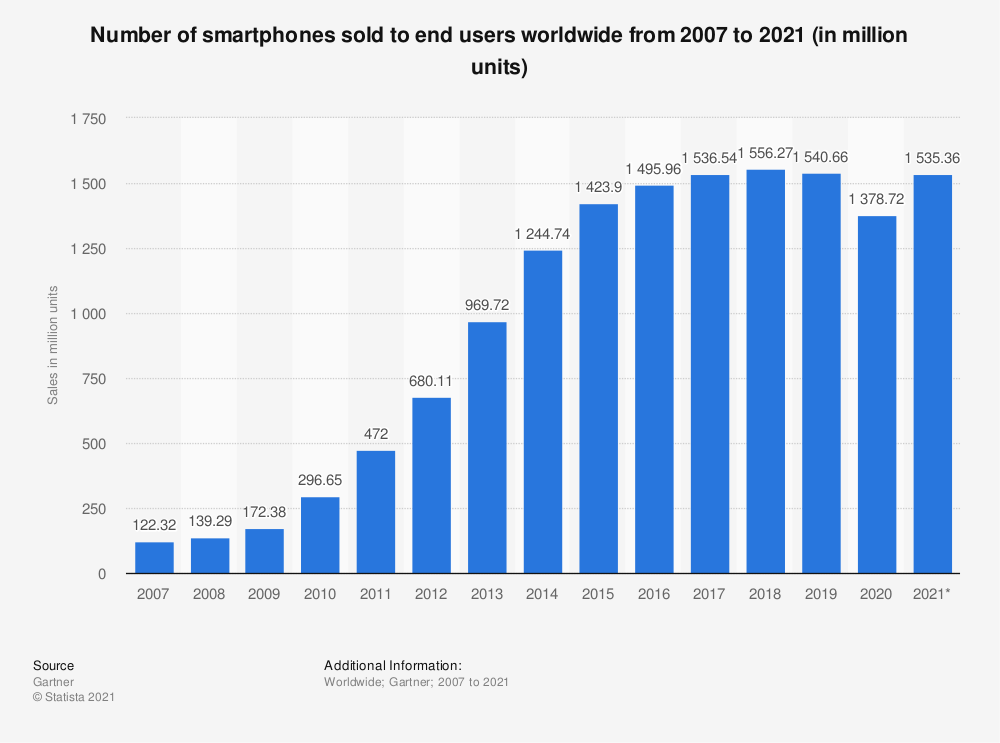

Welcome to new era of blockchains.
Welcome into the world of blockchains. We have so many great blockchgains in the world
then what Azil chain is going to do ? That's what you will be thinking in your head but
stay with us and you will know. This blockchain is a hetrogenous, multi chain framework.
it's like a zero chain and interpolerable.
Why we need a new blockchain ?
Ok fine, The purpose of blockchains creation according to satoshi was a p2p network non
dependant on banks for financial transactions but with increase of adoption and usage
these blochains became slow and expensive. By keeping these needs in mind many blockchains
came into existence. With many types of working consesus. A good blockchain capable of
becoming mainstream is Ethereum but this chain lacks important properties like speed and
cost of transaction. The purpose of making Azil chain is to provide a play ground for
bigger blockchains like BSC and etherium. Azil chain will be capable of interacting
directly with these chains and many other in future with one click polarisation and a
single window for all blockchains.
This chain will be able to recieve eth and bnb tokens straight from these chains and
projects will be able to transfer their projects on Azil chain with one click.
this looks like a dream right ? Everything starts as a dream until it becomes reality.
We aim to create a blockchain which should be capable of processing transactions faster
than banking mobile application. and this only won't fix the issue until such fast speed
comes with very minimal fee.
Blockchains came into existence almost 11 years ago and in these 11 years world has
changed a lot and technology has achieved new mile stones. If we want to see blockchains
competeing with traditional information technology systems, we need to update systems and
fast of blockchains. We all agreee on this but how we going to achieve this ? 11 years
ago when blockchains appeared on world horizon we didnt had much faster gpus or computers
but now we have a smart phone powerful than any other systems. for example the latest
iphone and samsung phones use the chip which is faster than computer available inmarkets
and mobile phones are coming with 8 to 16 gb memories and upto 1 tb storage.
Gamification and NFT mania.
Another big aspect we are keeping an eye on AAA games using blockchains and NFTs
increasing popularity. These technologies require a lot of power and resources for
efficient running. That's why we are planning to come up with a system where we have
enormous power, connectivity stabilization and adjustibilty in the blockchain to
accomodate these big power and data needs.
Features
- HIghest speed possible
- Massive on-chain data storage
- Proof of installation
- Mobile mining
- Your device is your Node
How are we going to achieve this ?
We are going to create a blockchain which will be a mixture of decentralised finance,
storage, cloud services and best mining practices. For this, we are going to divide this all
load into decentralised storage being held on billions of mobile devices by giving them
incentives for participating in securing network, providing data hosting services and
running nodes. There are 1.5 billion smartphone devices in the world and their number
is increasing everyday.

These devices will provide us massive data functionality never seen before in any blockchain.
Having professional IT team is going to give us all hindsights of building a blockchain
involving all cutting end IT technologies like micro services, docker and Kubernetes which
will help us in deploying our custom made application into all kind of systems not just
mobile phones. Azil chain will be able of being minted and hosted in any kind of device like
Macos, Linux, android and ios.
We have a vision where every device will be a crypto node, havig it's own wallet and all keys
inside it. Even the modern cars with digital systems like androinds screens in cars will be
able to mine Azil chain.We are working on an idea from future and a single blockchain with every
functionality. We aim to pack our blockchain in a software and make it available on any kind of
of device. It's like combining and outting every good blockchain properties in one and executing
it effieciently. This application will be consisted on a wallet where you will be able to acces
all your funds, stake them, mine them, provide liquidity through built in most advanced dex in the
app. Such distribution of coins will help us in achieveing blockchain adoption and super fast
and cheap transactions.
We are making